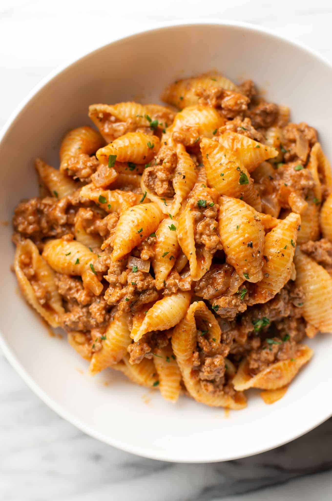

My Dad's Chili Recipe

The Chili my Dad Taught Me
My dad's chili is a fairly simple recipe. It has only a few ingredients and is very simple to make.
I remember him making this frequently and I'm happy to share this recipe for you all as well.
Ingredients:
- Ground Beef
- Pasta Shells
- Canned Diced Tomatoes
- Salt (lots of salt!)
- Pepper
How to Make My Dad's Chili:
- Start a pot of boiling water for the shells; sprinkle some salt into the pot.
- While the water is boiling; cook the ground beef; season with salt and pepper.
- Once the water has come to boil: insert the pasta into the pot and let cook for 6-8 minutes.
- When the beef has begun to brown, add the can of diced tomatoes. One can is enough, unless you like extra tomatoes in your dish.
- After your pasta and beef with the tomatoes has been cooked thoroughly, plate the shells (we always used bowls) and top with the ground beef and tomatoes.
- Congrats! You have completed the dish! Now, will you be using a fork or a shovel?